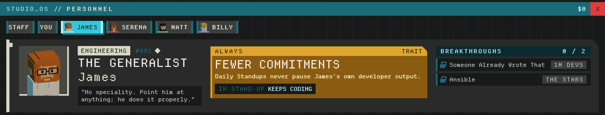
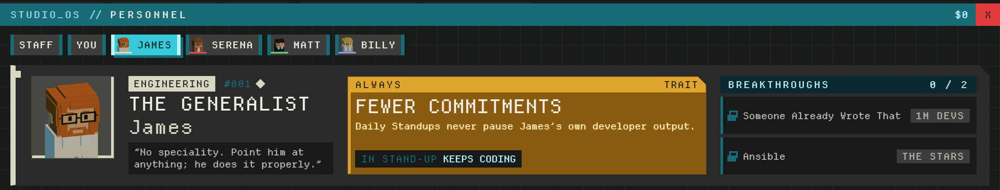
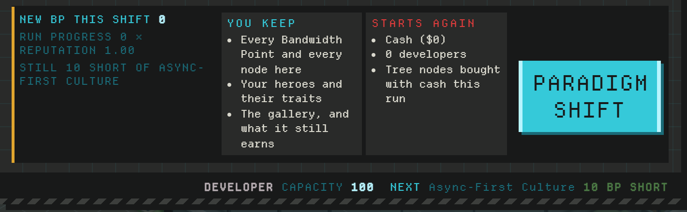
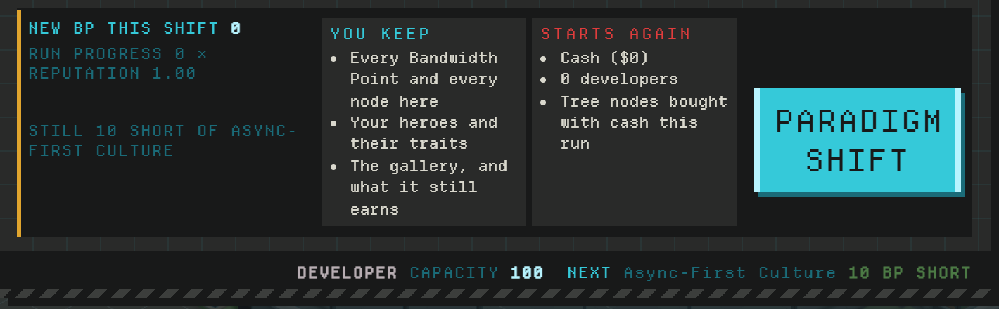
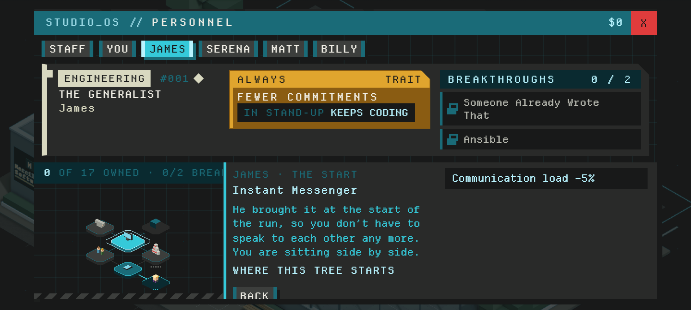
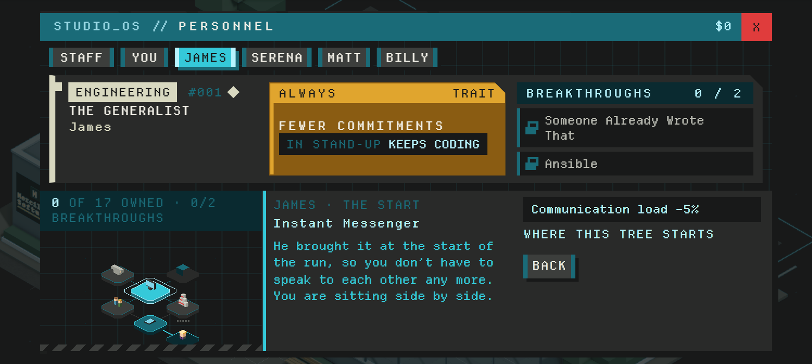

Spacing audit: before and after
Same game, same fixture (a shifted career with James), commit c39adb4 against 288336a. Red is before, cyan is after.
1Status tabs
Label sat 1px under the tab's top and touching its coloured foot; DEVS's value was shoved away from its label by the wide sub-line. Now 5px above, 3px clear of the foot, value beside its label.
2People tabs (STAFF / YOU)
Top row of each shot. STAFF and YOU were padded 4px left / 10px right (made for a face they do not have). Now even. Same shots, lower half: the three pass columns ended at three heights; now one floor, the amber plate keeps its facts on its own.


3Paradigm offer band
The argument hugged the top of its cell with a hollow under it, and the key sat low in its cell. Both are centred on the band.


4Phone frame, 748x336
Before: the tree's progress line was cut to '0/2 BREA' under the inspector, and the start tile's inspector scrolled 20px so BACK was off the bottom. After: the line wraps, BACK sits under the effect chip, nothing scrolls.

